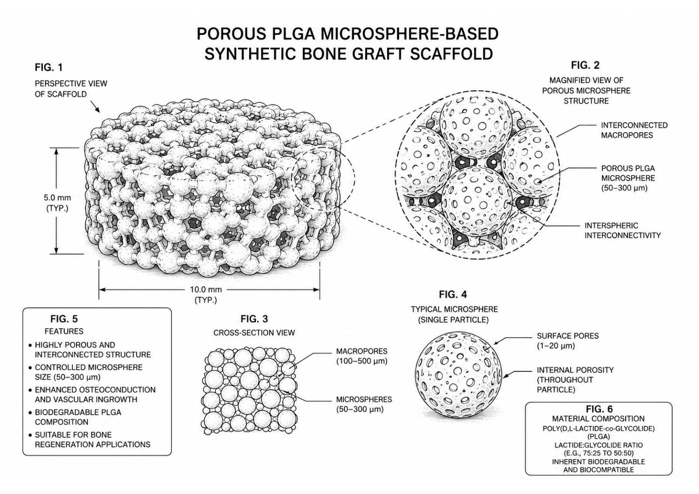
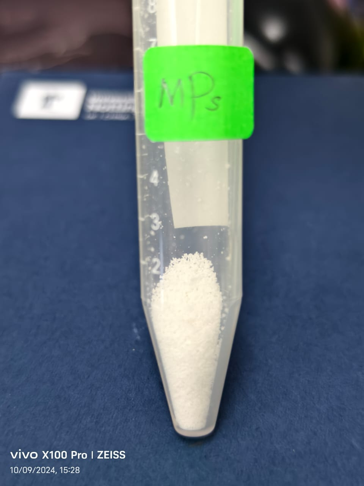

Smart Biomaterials
Hydrogels, responsive polymers and scaffold design technologies.
Explore Technology →Explore advances in bioprinting, scaffold engineering, tissue models and integrated biomedical platforms.
Explore the Research →
Hydrogels, responsive polymers and scaffold design technologies.
Explore Technology →
Microfluidic systems for engineered tissue and biological modelling.
Explore Development →
Emerging fabrication approaches and regenerative research platforms.
Learn More →Source-linked publications in generated editions

Live article title and journal will be inserted by the automated generator.
View publications ↗Verified journal, publication date and DOI.
View publications ↗Preprints will be labelled separately.
View publications ↗Developments to monitor
In production, trends require source evidence and are not automatically described as breakthroughs.
Inside our research and innovation

PROJECT SPOTLIGHTPorous PLGA microsphere scaffold concept for tissue regeneration.
Project Overview →New verified opportunities will appear here when official calls and deadlines are available.
Hidden automatically when no new verified opportunities exist.ICIRM 2027 · Kuala Lumpur · September 2027; exact dates to be confirmed.
Conference Details →Only current, source-confirmed opportunities will be shown.
Hidden automatically when no new verified opportunities exist.